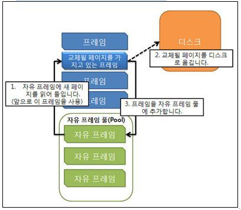

가상 메모리의 장점
- 가상 주소 공간을 사용하기 때문에 물리 메모리의 크기에 제약이 사라진다.
- 각 프로그램이 더 작은 메모리를 사용해 다중 프로그래밍 정도가 높아진다.
- swap 에 필요한 I/o 횟수가 줄어든다. ( 페이징을 사용하지 않으면 전체 프로세스를 swap 한다.)
9장에서 봤듯이 논리 주소와 실제 물리 주소의 사상은 MMU 가 담당한다.
또, 페이징을 사용하는 공유 메모리는 race condition 이 발생할 수 있다.
10.2 요구 페이징
프로그램이 시작할 때 프로그램 전체를 메모리에 적재하는 방식을 사용하게 되면 , 당장 사용하지 않는 페이지들도 메모리에 적재되고 사용되지 않는다는 단점이 존재한다. 그렇기 때문에 필요한 페이지만 적재하는 요구 페이징을 이용한다.
요구 페이징은 프로세스가 실행되는 동안 일부 페이지는 메모리에 존재하고 일부는 저장장치에 존재한다. 페이지가 어디에 존재하는지 식별하기 위해서 유효, 무효 비트 기법을 사용한다.
만약 vaild-invalid 비트가 “i” 라면 페이지가 메모리에 존재하지 않고 저장장치에 존재함을 의미해 운영체제는 페이지 폴트를 발생한다. 전체적인 흐름은 아래와 같다.
- cpu가 메모리에 접근하기 위해 주소를 생성한다.
- TLB 에 먼저 접근하여 해당 페이지가 존재하는지 확인한다.
- 존재하지 않는다면 페이지 테이블을 직접 확인한다.
- 페이지 테이블에서도 부호 비트가 invalid 라면 트랩을 발생시킨다.
- 운영체제가 저장장치에서 해당 페이지를 갱신한다.
- 트랩에 중단되었던 명령어를 다시 수행한다.
위와 같이 페이지가 필요해지기 전까지 그 페이지를 메모리에 적재하지 않는 방법을 순수한 요구 페이징 이라한다.
한 명령어에서 여러개의 페이지에 접근해야해 페이지 폴트가 여러번 발생할 수도 있다. 그러나, 프로그램은 참조 지역성 ( locality of reference ) 라는 특징에 의해 요구 페이징은 괜찮은 성능을 보여준다.
10.2.2 가용 프레임 리스트
운영체제는 페이지 폴트를 해결 하기 위해 사용가능한 프레임의 풀인 가용 프레임 리스트 를 유지한다. 일반적으로 zero fill on demand기법을 이용하는데, 프레임이 할당 되기 전에 전부 0 으로 채우는 방식이다. 그렇게 되면 프레임을 다시 할당할 때 이전 프로세스의 프레임 내용이 남아있지 않게 된다.
10.3 copy on write
fork ( )명령어 실행시에 부모 프레세스의 복사 본을 갖는 자식 프로세스가 생성된다. 그러나 대부분의 자식 프로세스는 exec( ) 시스템 콜을 사용해 새로운 메모리를 할당하는데, 이때 복사한 메모리들이 낭비 된다. 이를 해결하기 위해 copy on write 방식을 사용해 자식 프로세스가 수정하는 페이지 들에 대해서만 복사복을 생성한다. 수정 되지 않은 페이지는 자식 부모 프로세스가 함께 공유하고 있다.
10.4 페이지 교체
전체 프레임의 크기보다 많은 프로세스들이 각각 페이지를 할당 받았을때에 메모리 과할당 ( over allocating) 문제가 발생한다. 메모리가 초과 할당 되면 ( os 가 가용 프레임 리스트를 확인 했을때 )
프로세스를 종료 하거나, 표준 스와핑으로 프로세스를 스왑 아웃 하여 다중 프로그래밍 정도를 줄인다. 표준 스와핑을 활용한 방식은 오버헤드를 유발해 사용하지 않는데 그 대안으로 페이징 교체 방식을 결합해 사용한다.
10.4.1 기본 페이지 교체
현재 사용하지 않는 프레임 ( victim frame )을 페이지 교체 알고리즘을 사용하여 선정한 후에 비운다. 프레임 공간을 스왑 공간에 쓰고 페이지 테이블도 갱신한다. 그 이후 페이지 폴트를 발생 시킨 프로세스를 다시 실행 시킨다.
이 경우 디스크에 두번 접근이 필요한데 이 오버헤드를 변경 비트를 사용하여 감소시킨다. cpu 가 해당 페이지에 어떤 바이트 라도 쓰게 되면 이를 기록한다. 변경 비트가 변경 되지 않았으면 swap 공간과 같은 값을 가지고 있음을 의미하므로 그 위치에 폴트가 일어난 새로운 프레임으로 교체한다.
페이지 교체를 사용하여 요구 페이징을 만족시키고 논리, 물리 메모리의 분리를 만들어낸다.
요구 페이징은 프레임 할당 알고리즘 , 페이지 교체 알고리즘을 사용해야한다.
페이지 교체 알고리즘
- FIFO : 프레임 크기를 늘려도 페이지 폴트율이 더 증가하는 Belady 모순 발생
- 최적 페이지 교체 : SJF 스케줄링과 마찬가지로 최적 페이지를 알 수 없기 때문에 사용 불가능
- LRU 페이지 교체
- LRU 근사 페이지 교체
10.4.4 LRU 페이지 교체
OPT ( 최적 페이지 교체 ) 미래에 페이지가 사용될 시간을 사용하는 반면, LRU 는 최근의 과거를 가까운 미래의 근사치로 간주하고 하여 교체할 페이지를 선정한다. 즉, 가장 오랫동안 사용되지 않은 페이지를 교체한다.
필요한 하드웨어 지원
- 계수기 (counters) : 각 페이지 마다 사용 시간 필드를 넣어 페이지의 마지막 참조 시간을 유지
- stack : Stack의 가장 위 페이지는 최근에 사용된 페이지이고 밑 바닥은 가장 오랫 동안 사용되지 않은 페이지 이다.
10.4.5 LRU 근사 페이지 교체
LRU 페이지 교체를 지원하는 하드웨어 장비가 없는 시스템에서는 다른 페이지 교체 알고리즘을 사용해야한다. 많은 시스템에서 참조 비트를 사용하여 LRU의 하드웨어 역할을 대신하는데 페이지에 처음 참조비트는 모두 0 으로 초기화 되고 참조가 있을 때 마다 하드웨어가 참조비트를 1 로 설정한다. 참조 비트를 사용하여 어떤 페이지가 한번도 사용되지 않았는지 알 수 있다.
부가적 참조 비트 알고리즘
시프트 레지스터를 사용하여 일정 시간간격마다 비트를 이동 시킨다. 1111111 은 가장 최근에 사용된 페이지이고 0000000 은 8 번의 구간 동안 한번도 사용하지 않은 프레임이다. 참조 비트중 가장 작은 값을 갖는 페이지를 교체한다.
2차 기회 알고리즘 Clock algorithm
FIFO 알고리즘을 개선하여 사용하는 방식이다. 추가적으로 참조 비트를 확인 하는데, 참조 비트가 0 이면 페이지를 교체하고 1 이면 다시 한번 기회를 주고 참조 비트를 0으로 변경하고 다음 FIFO 페이지로 넘어간다.
순환 큐를 사용하여 구현하는데 만약 모든 참조 비트가 1 이었다면 포인터는 큐를 한바퀴 돌게 되고 그 이후 부터 FIFO 처럼 동작하게 된다. ( 모든 참조비트가 0 으로 변경되었으므로 )
개선 된 2 차 기회 알고리즘
참조 비트와 변경 비트 ( modified bit, dirty bit )를 사용한다. 그러면 2^2 의 경우의 수가 존재하게 되는데 이에 따라 각 프레임에 등급을 설정한다. 위에서 변경 비트는 페이지의 교체를 의미하는 비트였다. 모든 프레임은 등급을 부여받고 가장 낮은 등급을 갖는 프레임을 교체할 페이지로 선정한 다.
clock 알고리즘 과 차이점은 I/O 횟수를 줄이기 위해 변경 비트를 활용한다는 점이다.
10.4.6 계수 기반 페이지 교체
- LFU ; least frequently used : 참조 회수가 가장 적은 페이지를 교체, 어떤 프로세스가 초기 단계에서 한 페이지를 집중적으로 많이 사용하고 다시 사용하지 않을 때 효율이 떨어진다.
- MFU ; most frequently used : 참조 회수가 가장 많은 페이지를 교체, 가장 적게 참조된 페이지가 오히려 추후에 참조될 가능성이 높을 것이라는 판단에 근거하는 알고리즘
10.4.7 페이지 버퍼링 알고리즘
page fault가 발생하여 교체해야 한다면 backing store를 이용하는 것(replacement 방법)이 기본적이지만 이 방법은 교체할 page를 먼저 free frame에 올려두고 page fault가 발생한 process의 작업을 먼저 처리한다. (급한 것부터 처리)
그 이후 victim page frame을 disk로 교체 후, 해당 frame을 비운 후 free frame에 넣어주는 방식

10.4.8 응용과 페이지 교체
응용프로그램 독자적으로 메모리 관리와 I/O 버퍼링을 수행하는 데이터 베이스의 경우 범용적인 알고리즘을 사용하는 OS 에 비해 응용의 목적에 더 최적화된 알고리즘을 사용한다.
이와 같은 특별한 프로그램들은 보조저장장치 파티션을 파일 시스템 구조가 아닌 단순한 논리적인 블록들의 순차적인 배열로써 사용할 수 있게 해주는 Raw disk 를 제공한다. Raw disk 는 파일 시스템 서비스를 거치지 않는다.
10.5 프레임 할당
여러개의 프로세스들에 제한된 가용 메모리를 어떻게 할당할것 인지에 대해 논의한다.
페이지 운영 체제를 위한 프레임 공간 ( 버퍼, 테이블 공간 ) 등 또한 페이징을 위해 사용되게 할 수도 있고, 언제나 가용프레임 리스트에 3개를 예비로 남겨 두는 방식을 사용할 수도 있다.
10.5.1 최소로 할당해야할 프레임 수
프레임 수가 너무 적을 경우에 페이지 폴트율이 증가해 결과적으로 프로세스의 실행이 늦어진다. ( 한 명령어가 참조하는 페이지가 모두 메모리에 올라와 있어야한다.)
이때 최소 프레임 수는 컴퓨터 아키텍처에 의해 정의되는반면 최대 프레임 수는 물리 메모리양에 의해 결정된다.
10.5.2 할당 알고리즘
- 균등 할당 : 전체 가용 프레임 개수 / 프로세스 개수
- 비례 할당 : 전체 가용 프레임 개수 x 프로세스 크기 / 전체 프로세스 크기
균등 할당 비례 할당은 모든 프로세스의 우선순위가 같음을 가정하는데, 우선순위가 높은 프로세스에 프레임을 먼저 할당하기 위해서는 비례 할당 방법을 사용하되 프로세스의 크기가 아닌 우선순위를 계산식에 추가해야한다.
10.5.3 전역 대 지역 할당
프레임 할당을 위해 경쟁하는 환경에서 페이지 교체 알고리즘은 전역 교체, 지역 교체가 존재한다.
- 전역 교체 :
- 프로세스가 교체할 프레임을 다른 프로세스의 프레임을 포함한 모든 프레임에서 선정
- 다른 프로세스의 페이징 동작에 영향을 준다는 점 때문에 동일한 프로세스도 외부 실행환경에 따라 다르게 실행 시간이 실행될 수 있다.
- 일반 적으로 지역 교체 알고리즘 보다 더 좋은 시스템 성능을 갖는다.
- 지역 교체 :
프로세스가 가지고 있는 프레임 중에서 교체할 프레임을 선정
전역 페이지 교체 정책 구현 전략
가용 메모리 양을 최소 임계값과 최대 임계값 사이로 유지한다. 최소 임계 값보다 가용메모리가 적어지게 되면 Os 는 Reaper 라는 페이지 회수 커널 루틴을 실행시킨다.
이때 Reaper 회수할 커널 루틴을 선정 하기 위해 일반적으로 LRU 근사 알고리즘을 사용한다.
linux 는 out of memory 시에 OOM killer 라는 루틴이 종료할 프로세스를 선택해 메모리를 회수
주요한 ( hard) 페이지 폴트 , 사소한 ( soft ) 페이지 폴트
*주요한 페이지 폴트는 페이지가 참조되었을때 페이지가 메모리에 없을 때 발생한다. ( 일반적인 페이지 폴트 )
사소한 페이지 폴트는 실제 메모리에 페이지가 존재하지만 페이지에 대한 논리적 매핑 이 존재하지 않을때 발생한다. 문제를 해결하는데 주요한 페이지 폴트보다 시간이 덜 걸린다.
10.6 스레싱
가용 프레임이 모두 가득 차 있고 페이지들이 활발하게 사용되고 있다면, 페이지 폴트가 발생했을때 페이지 폴트가 연쇄적으로 일어나게 된다. 이런 과도한 페이지 교체 작업으로 인해서 프로세스가 실제 실행 보다 페이징에 더 많은 시간을 소요했다며 이를 스레싱 이라한다.
10.6.1 스레싱의 원인
- OS 는 Cpu 이용률을 감시하는데 CPU 이용률이 낮으면 다중 프로그래밍 정도를 높인다.
- 페이지 폴트가 발생해 페이징 장치를 사용하고 프로세스는 준비 큐로 이동하게 된다.
- 프로세스들이 페이징 장치를 기다리는 동안 CPU 이용률이 감소한다.
- CPU 스케줄러는 CPU 이용률을 보고 다중 프로그래밍 정도를 더 높인다.
- 다중 프로그래밍 정도가 높아지며 더 많은 페이지 폴트가 발생하고 스레싱이 발생한다.
전역 교체 알고리즘을 사용해 스레싱이 발생할경우 지역 교체 알고리즘을 사용하여 스레싱의 영향을 제한 한다. 그러나, 프로세스가 스레싱을 하는 경우 페이징 장치의 큐에 쌓이게 되어 결과적으로 스레싱 되지 않은 프로세스의 실질 접근 시간도 증가하게 된다.
따라서, 스레싱 현상을 방지 하기 위해 각 프로세스가 필요로 하는 최소한의 프레임 개수를 보장해야한다. 최소한의 프레임 개수를 보장하기 위해 지역성 모델을 사용한다.
10.6.2 작업 집합 모델
이러한 쓰레싱 현상을 방지하려면 각 프로세스가 필요로 하는 최소한의 프레임 개수를 보장해주어야 한다.
- 지역(locality) : 집중적으로 함께 참조되는 페이지들의 집합
- 지역성 모델(locality model) : 프로세스가 실행될 때 항상 어떤 특정 지역에서 메모리를 집중적으로 참조함을 뜻한다. 이러한 지역성은 page fault의 변화에서도 나타난다. 주로 특정 지역에서 특정 지역으로 빠져나가면서 page fault rate가 급격히 변화한다.
- 작업 세트 : 최근 Δ개 페이지 참조의 서로 다른 페이지의 집합
- 작업 세트 모델 : 이러한 프로세스 실행의 지역성 모델을 기반으로 최수 프레임 개수를 추정한다. 각 프로세스가 실제로 사용중인 프레임 수가 몇 개인지를 지속적으로 감시하며 작업 세트 크기 변화를 관찰한다
페이지 폴트율은 새로운 지역으로 들어가 해당 지역의 작업 집합으로 교체하는 과정에서 요구 페이징이 일어나 가장 높은 수치를 갖는다. 즉, 프로세스의 작업 집합이 이동할 때마다 높은 페이지 폴트율을 갖는다.
10.6.3 페이지 폴트 빈도
작업 집합 모델 모다 더 직접적으로 스레싱을 조절한다. 페이지 폴트율의 상한과 하한을 정해 두 고 페이지 폴트율이 상한을 넘으면 프레임을 더 할당해주고, 하한을 넘으면 프레임 할당을 해제한다.
10.7 메모리 압축
페이징의 대안으로 수정된 프레임을 스왑 공간에 페이지 아웃 하지 않고 여러 프레임을 하나의 프레임으로 압축한다.
압축된 프레임 중 하나가 참조 되면 페이지 폴트가 발생 한 후 압 축된 프레임이 복원 된다.
10.8 커널 메모리 할당
커널 메모리는 페이지 리스트와 는 별도의 메모리 풀에서 할당 받는다. 왜냐하면 커널은 다양한 크기의 자료구조를 가져 기본 페이지의 크기보다 작은 크기일 수 있는데 단편화가 발생하기 때문이다. 또한, 물리 메모리에 직접 접근 하는 특정 하드웨어 장치가 연속된 물리 메모리를 요구할 수 있다.
커널에서 메모리를 관리 하기 위해 아래 버디 시스템, 슬랩 할당 기법을사용할 수 있다.
버디 시스템
물리적으로 연속된 페이지들로 이루어진 고정된 크기의 세그먼트로부터 메모리 (2의 거듭 제곱 크기 )를 할당한다. 만약 메모리를 할당 하게 된다면 2의 거듭 제곱 크기의 올림 값만큼 메모리를 할당한다. 예를 들어, 256 kb 에 127 kb 를 할당하려면 세그먼트는 128 kb 만큼의 버디로 나누어진다. 버디는 재귀적인 구조를 갖는다.
슬랩 할당
각 커널 자료구조마다 하나의 캐시가 존재하고 커널 객체를 저장하기 위해 캐시를 이용한다.
슬랩은 연속된 페이지로 구성되어 있다.
슬랩 할당장점
- 단편화에 의해 낭비되는 메모리가 없다. 자료구조마다 해당하는 크기의 캐시를 갖기 때문이다.
- 메모리 요청이 빠르게 일어난다. 요청을 할 때 마다 메모리를 할당하고 할당 해제하는 것이 아닌, 미리 cache에 할당을 해 놓았다가 필요시에 제공만 해주고, 마찬가지로 메모리를 할당 해제하는 것이 아니라 다시 cache에 돌려놓기만 하면 되기 때문이다.
10.9 기타 고려사항
페이지 시스템이 효과적으로 실행되기 위하여 페이지 교체 ,할당 알고리즘 외에 고려해야할 사항들
- 프리 페이징
프로세스가 시작 될때 페이지 폴트가 많이 발생 하는데 작업 집합을 기억해두어 필요한 페이지의 일부 또는 전부를 한번에 메모리에 가져와 이를 방지한다. - 페이지 크기
페이지의 크기가 커지면 페이지 테이블의 개수가 줄어들고 내부 단편화가 늘어며 I/O 처리 시간이 감소한다. 반면에, 페이지 의 크기가 작아지면 페이지 테이블의 개수는 늘어나고 . 페이지 테이블이 차지하는 메모리 크기도 증가하며 데이터의 정밀도가 좋아진다.
페이지 크기는 점점 커지는 추세이다. - TLB Reach
TLB Reach는 TLB entry 수 x 페이지 크기 로 TLB에 엑세스 할 수 있는 메모리 공간을 의미한다. TLB 를 늘리면 tlb hit ratio 가 증가함을 의미해 TLB Reach를 늘려야한다. 그러나, TLB 는 비싸고, 전력을 많이 소모해 TLB Entry를 무한정 많이 늘릴 수 없다. 따라서, 기본 페이지 크기를 늘리거나 여러 종류의 페이지 크기를 제공한다. - 프로그램 구조
자료 구조와 프로그래밍 구조를 잘 선택해 지역성을 향상시킨다. 이는 페이지 폴트율 과 작업 집합의 페이지 수를 줄인다. - I/O 상호 잠금과 페이지 잠금
프로세스가 I/O wait 할 때 cpu 스케줄러에 의해 다른 프로세스가 cpu 에 할당된다. 이때 페이지 폴트가 발생해 우연히 해당 I/O 버퍼 메모리를 교체하게 되었을경우 wait 중이던 프로세스가 다시 cpu를 점유했을때 문제가 발생한다.
해결책- 사용자 공간에 I/O를 하지 않는다. 실제 I/O 는 시스템 공간과 장치 사이에서만 수행한다.
- 잠금 비트를 사용하여 페이지를 메모리에서 lock 한다.